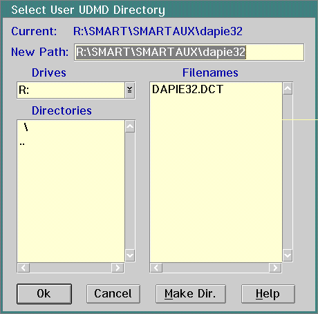
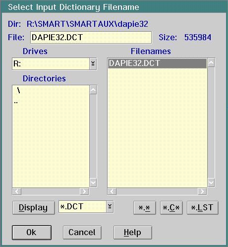
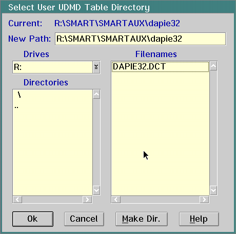

To analyze and migrate Windows 32-bit code, you need to create the Open32 UDMD as follows:
SMART\SMARTAUX\DAPIE32
Click on the Ok push button.
DAPIE32.DCT
Click on the Ok push button.
10.
a.
Click the User UDMD with SMART Table radio button.
Click on the Select2 push button to select a UDMD.
Choose the SMART\SMARTAUX\DAPIE32 subdirectory.
Click on the Ok push button.
Click on the Set push button to load the table and UDMD. When the Please Standby...Loading Migration Table message disappears, SMART displays the SMART2 Source Migration window.